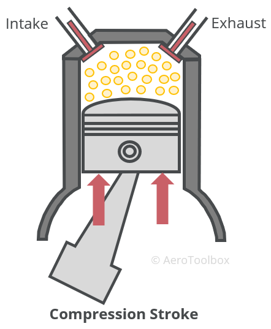

Compression
The air-fuel mixture is compressed
About This Stage
During the compression stroke, both the intake and exhaust valves are closed. The piston moves upward, compressing the air-fuel mixture that was drawn in during the intake stroke. This compression significantly increases the pressure and temperature of the mixture, preparing it for ignition. The compression ratio determines how much the mixture is squeezed, which directly affects the engine's efficiency and power output.

Compression Stroke